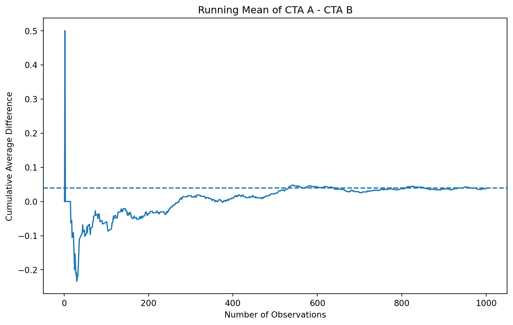

Simulating Key Ideas from Classical Frequentist Statistics
Author
Chunjiang Liu
Published
April 22, 2026
Introduction
Suppose a website’s landing page includes a section where visitors can sign up for a newsletter. Even a small change in wording can affect whether users decide to subscribe, so it is useful to test which message performs better. In this example, I compare two possible calls to action (CTAs): CTA A says “Sign up for our newsletter here!” and CTA B says “Stay up to date by signing up!”
To evaluate which CTA leads to more sign-ups, I use an A/B test. In an A/B test, visitors are randomly assigned to one of two versions, and outcomes are compared across groups. Here, some visitors see CTA A and others see CTA B, and I compare the sign-up rates between the two groups. This simple setup provides a practical way to study how classical frequentist statistics can be used to analyze experimental data.
The A/B Test as a Statistical Problem
To analyze the A/B test formally, I represent each visitor’s outcome as a Bernoulli random variable. Each person either signs up for the newsletter or does not, so the outcome takes the value 1 for a sign-up and 0 otherwise. If the probability of signing up is denoted by \(\pi\), then each observation can be viewed as a draw from a Bernoulli distribution with parameter \(\pi\).
Because the wording of the CTA may affect user behavior, the sign-up probability does not need to be the same across the two groups. Let \(\pi_A\) denote the probability of signing up for visitors who see CTA A, and let \(\pi_B\) denote the probability for visitors who see CTA B. The main quantity of interest is therefore
\[
\theta = \pi_A - \pi_B
\]
the difference in sign-up rates between the two versions.
To estimate this quantity, I use the difference in sample means:
\[
\hat{\theta} = \bar{X}_A - \bar{X}_B
\]
Since each observation is coded as either 0 or 1, the sample mean in each group is simply the sample proportion of visitors who signed up. That means \(\bar{X}_A = \hat{\pi}_A\) and \(\bar{X}_B = \hat{\pi}_B\), so the estimator \(\hat{\theta}\) is just the observed difference in sign-up rates between the two CTAs.
Simulating Data
In a real A/B test, we would not know the true sign-up probabilities for the two CTAs. We would only observe the outcomes from users who were randomly assigned to each version and then estimate the difference from the sample. For the purpose of this exercise, however, I set the true probabilities myself so that I can study how the estimator behaves when the underlying truth is known.
Suppose the sign-up probability is \(\pi_A = 0.22\) for CTA A and \(\pi_B = 0.18\) for CTA B. This means the true treatment effect is
\[
\theta = \pi_A - \pi_B = 0.04
\]
I then simulate 1,000 Bernoulli draws from each group, coding a sign-up as 1 and a non-sign-up as 0. These simulated observations will be used throughout the rest of the analysis.
The simulated sample proportions are close to, but not exactly equal to, the true probabilities. This small difference is expected because of random sampling variation.
The Law of Large Numbers
The Law of Large Numbers states that as the sample size grows, the sample mean converges to the population mean. In this setting, that matters because our estimator is based on sample averages. If the sample is large enough, the observed difference in sign-up rates should move closer to the true difference between the two CTAs.
To illustrate this idea, I compute the element-wise differences between the simulated CTA A and CTA B outcomes and then calculate the cumulative average of those differences. If the Law of Large Numbers is working as expected, the running average should fluctuate at first but gradually stabilize near the true value of \(\theta = 0.04\).
Show code
import matplotlib.pyplot as pltdifferences = cta_A - cta_Brunning_mean = np.cumsum(differences) / np.arange(1, len(differences) +1)plt.figure(figsize=(10, 6))plt.plot(np.arange(1, len(differences) +1), running_mean)plt.axhline(y=0.04, linestyle="--")plt.xlabel("Number of Observations")plt.ylabel("Cumulative Average Difference")plt.title("Running Mean of CTA A - CTA B")plt.show()

The plot starts with large fluctuations because the estimate is based on only a small number of observations at the beginning. As more observations are added, the cumulative average becomes more stable and gradually approaches the true difference of 0.04. This pattern illustrates the Law of Large Numbers: when the sample size increases, random noise has less influence on the estimate, and the sample average moves closer to the population value.
Bootstrap Standard Errors
Now that I have a reasonable estimate of the difference in sign-up rates, the next question is how precise that estimate is. A point estimate alone is not enough, because it does not show how much uncertainty remains in the result. To address that, I estimate the standard error of the statistic and use it to construct a confidence interval.
One useful way to measure uncertainty is the bootstrap. The bootstrap is a resampling method that repeatedly draws samples with replacement from the observed data, recalculates the statistic of interest for each resample, and uses the variation across those resampled statistics to estimate the standard error. This is helpful because it allows us to approximate sampling variability directly from the data rather than relying only on a closed-form formula.
where \(\hat{\pi}_A\) and \(\hat{\pi}_B\) are the observed sample proportions and \(n_A\) and \(n_B\) are the sample sizes.
The bootstrapped standard error is 0.017659, while the analytical standard error is 0.017767. These two values are extremely close, which suggests that the bootstrap provides a reasonable estimate of uncertainty in this setting. Using the bootstrapped standard error, I construct a 95% confidence interval for \(\theta\) of (0.003388, 0.072612). Because this interval does not include 0, the results are consistent with a positive difference in sign-up rates between the two CTAs. In other words, the simulated data suggest that CTA A performs better than CTA B, although the estimated effect is still subject to sampling uncertainty.
The Central Limit Theorem
The Central Limit Theorem states that as the sample size grows, the sampling distribution of the sample mean becomes approximately Normal, even when the underlying data are not Normally distributed. In this setting, each observation is Bernoulli, so the raw outcomes themselves are clearly not Normal. However, the difference in sample means across the two CTA groups should become more bell-shaped as the sample size increases.
To illustrate this idea, I repeatedly simulate the estimator \(\hat{\theta} = \bar{X}_A - \bar{X}_B\) for several different sample sizes. If the Central Limit Theorem holds, the distribution of these simulated estimates should look rougher and less symmetric when \(n\) is small, but become smoother and more approximately Normal as \(n\) becomes larger.
The histograms show that when the sample size is small, the distribution of \(\hat{\theta}\) is more irregular and dispersed. As the sample size increases from 25 to 500, the distribution becomes more concentrated around the true difference of 0.04 and takes on a smoother, more bell-shaped form. This pattern is consistent with the Central Limit Theorem: even though each individual observation is Bernoulli rather than Normal, the sampling distribution of the estimator becomes approximately Normal as the sample size grows.
Hypothesis Testing
Now that the Central Limit Theorem suggests the sampling distribution of \(\hat{\theta}\) is approximately Normal for large samples, I can use that result to carry out a formal hypothesis test. The goal is to determine whether the observed difference in sign-up rates provides enough evidence against the idea that the two CTAs perform the same.
I begin with the null hypothesis
\[
H_0 : \theta = 0
\]
which means the two CTAs have the same sign-up probability. The alternative hypothesis is
\[
H_1 : \theta \neq 0
\]
which means the sign-up rates differ. To test this, I standardize the estimated difference in sign-up rates by its standard error and compute the statistic
\[
z = \frac{\hat{\theta} - 0}{SE(\hat{\theta})}.
\]
Under the null hypothesis, \(\hat{\theta}\) is approximately Normal with mean 0 for large samples. Dividing by its standard error therefore produces a statistic that is approximately standard Normal. This gives a reference distribution for calculating a p-value, which tells us how unusual the observed result would be if the null hypothesis were true.
Although this procedure is often described as a t-test in practice, the logic here is closer to a z-test. The exact t-distribution result applies when data are Normally distributed and the variance is estimated from the sample. In this setting, the outcomes are Bernoulli rather than Normal, so the justification instead comes from the Central Limit Theorem. For large samples, however, the standard Normal and t-distribution are very similar, so the practical conclusion is usually the same.
The test statistic is 2.1388 and the corresponding p-value is 0.0325. Because the p-value is below the 0.05 significance level, I reject the null hypothesis that the two CTAs have the same sign-up rate. In this simulated sample, the data provide evidence that the difference in performance between the two CTAs is unlikely to be explained by random sampling variation alone. This result is also consistent with the confidence interval from the previous section, which did not include 0.
The T-Test as a Regression
It turns out that the two-sample comparison from the previous section can also be written as a simple linear regression. This connection is useful because it shows that hypothesis testing and regression are closely related. In practice, the same regression framework can be extended to include controls, interactions, or more complicated experimental designs, while still producing the same inference in the simple two-group case.
To set up the regression, I stack the CTA A and CTA B observations into one dataset. Let \(Y_i\) be the outcome for visitor \(i\), where \(Y_i = 1\) if the visitor signed up and \(Y_i = 0\) otherwise. Let \(D_i\) be an indicator equal to 1 if the visitor saw CTA A and 0 if the visitor saw CTA B. I then fit the model
\[
Y_i = \beta_0 + \beta_1 D_i + \varepsilon_i
\]
In this regression, \(\beta_0\) is the expected value of \(Y_i\) when \(D_i = 0\), so it is the mean sign-up rate for CTA B. The quantity \(\beta_0 + \beta_1\) is the expected value of \(Y_i\) when \(D_i = 1\), so it is the mean sign-up rate for CTA A. Therefore, \(\beta_1 = \pi_A - \pi_B = \theta\), and the OLS estimate \(\hat{\beta}_1\) is numerically the same as the difference in sample means, \(\hat{\theta} = \bar{X}_A - \bar{X}_B\).
The regression results match the earlier two-sample approach almost exactly. The coefficient on \(D_i\) is 0.038, which is identical to the estimated difference in sign-up rates from the previous section. The p-value is 0.0327, which is also very close to the p-value from the hypothesis test. This shows that in the simple two-group case, a regression with a treatment indicator produces the same substantive conclusion as the two-sample test.
This equivalence matters because regression provides a more flexible framework for analysis. In this simple setting, it reproduces the same estimate and inference, but in more realistic applications it can be extended to include additional covariates, interaction terms, or multiple treatment groups. That is one reason regression is such a central tool in experimental analysis.
The Problem with Peeking
A common temptation in A/B testing is to check the results repeatedly before the planned sample size has been reached. Suppose an analyst runs the experiment for up to 1,000 visitors per group, but instead of waiting until the end, checks the hypothesis test after every 100 observations per group. If any one of those interim tests is significant at the 5% level, the analyst stops the experiment and declares a winner.
This is problematic under classical frequentist statistics because a single test at \(\alpha = 0.05\) controls the false positive rate only when it is performed once, at the planned stopping point. If the analyst repeatedly tests the data while the experiment is still running, each additional peek creates another chance to reject the null hypothesis by random luck alone. As a result, the overall probability of making at least one false rejection becomes larger than the nominal 5% level.
The simulation shows that repeated peeking can greatly inflate the false positive rate. Under the null hypothesis, the nominal false positive rate for a single test is 0.05, but the empirical false positive rate under peeking is 0.1987. This means that when the analyst checks the results after every 100 observations and stops as soon as one test is significant, the chance of incorrectly declaring a winner rises from about 5% to nearly 20%.
This is a serious problem for A/B testing because it makes random noise look like real evidence. Even when the two CTAs truly perform the same, repeated interim testing creates many opportunities to observe a “significant” result by chance alone. In practice, this means analysts should not freely peek at results and stop early without adjustment. Instead, they should either commit to a fixed sample size in advance or use formal sequential testing methods that account for repeated looks at the data.